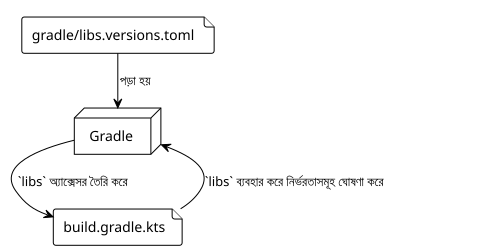
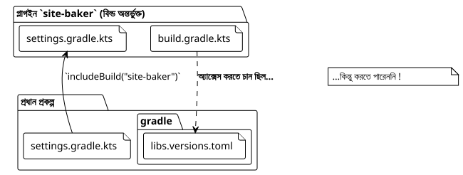

অনুচ্ছেদ ৫ : সমযোজিত libs.versions.toml এর অ্যাডভেঞ্চার
প্রকাশিত: 27 September 2025
ভূমিকা
আমাদের প্লাগইন তৈরির প্রচেষ্তায়`site-baker`, আমরা পরিষ্কার ও কেন্দ্রীয় কোড বেস duyere রেখে থাকতে চেষ্টা ছিলাম। সাধারন গ্রেডল ইকোসিস্টেমে এর চেয়ে ভালো একটি অনুশীলন হল তার使用সংস্করণের ক্যাটালগ(libs.versions.toml) dependencies manage করার জন্য। কিন্তু আপনার প্রজেক্ট আরও জটিল হয়, একটিকম্পাজיטים তৈরিএকটি স্বাধীন বিল্ড (আমাদের প্লাগইন)কে অন্য কোনো বিল্ডে অন্তর্ভুক্ত করতে হবে ?
এখানে আমাদের অভিযান একটি অপ্রত্যাশিত দিক নিয়েছে। আমরা চেয়েছিলাম যে আমাদের প্লাগইন`site-baker`, এটা নিজেই একটি Gradle প্রকল্প, আমাদের মূল প্রকল্পের মতো একই সংস্করণ ক্যাটালগ ব্যবহার করে। এই নিবন্ধ, আমাদের সিরিজের পাঁচতম, বর্ণনা করে কিভাবে আমরা এই চ্যালেঞ্জ সমাধান করেছি।
ভার্সন ক্যাটালগ (libs.versions.toml): একটি রিমাইন্ডার
ফাইল`gradle/libs.versions.toml`এটি গ্রেডলের একটি বৈশিষ্ট্য যা আপনার প্রকল্পের নির্ভরতাগুলির সংস্করণ ও সমন্বয়কে কেন্দ্রীভূত করে। सामान्यतः এটিকে چارটি অংশে বিভক্ত করা হয়:
-
[versions]: সংস্করণ সংখ্যার জন্য অলিয়াস তৈরি করে (উদাহরণ:`kotlin = "1.9.20"`). -
[libraries]: সম্পূর্ণ নির্ভরতা জন্য উপনাম সেট করে, উপরে সংজ্ঞায়িত সংস্করণগুলো ব্যবহার করে (উদাহরণস্বরূপ:`kotlin-stdlib = { module = "org.jetbrains.kotlin:kotlin-stdlib", version.ref = "kotlin" }`). -
[bundles]`কয়েকটি লাইব্রেরি একমাত্র অ্যালিয়াসের অধীনে সমুহ করুন (উদাহরণ:`jackson = ["jackson-core", "jackson-databind"]) -
[plugins]: Gradle প্লাগইনের জন্য অ্যালিয়াস সেট করে।
একবার সংজ্ঞায়িত হলে, গ্রেডল স্বয়ংক্রিয়ভাবে টাইপড অ্যাক্সেসর তৈরি করে, যা আপনার`build.gradle.kts`অনেক বেশি পঠনযোগ্য :
dependencies {
// Au lieu de : implementation("org.jetbrains.kotlin:kotlin-stdlib:1.9.20")
implementation(libs.kotlin.stdlib)
}
2. সমস্যা: একটি কম্পোজিট বিল্ড এবং দুটি আলাদা বিশ্ব
আমাদের প্রকল্পের গঠন একটিকম্পজিট নির্মাণ. Le projet principal (thymeleaf.cheroliv.com) প্লাগইন প্রকল্প অন্তর্ভুক্ত ()site-baker) via la commande includeBuild("site-baker")`ফাইলে`settings.gradle.kts.

সমস্যা হল যে, ডিফল্টভাবে একটি অন্তর্ভুক্ত বিল্ড একটিবিভক্ত জগৎ. তার নিজের কনফিগেশন আছে, তার নিজের জীবনচক্র, এবং এটা ফাইলকে দেখে না।libs.versions.toml`প্রধান বিল্ডের। আমাদের`plugin/build.gradle.kts`ব্যবহার করার চেষ্টা করছিল`libs.plugins.kotlin.jvm, কিন্তু বস্তুটি`libs`এটিই সঠিক TOML ফাইল_from_ต้นা তৈরি হয়নি, যার কারণে বিল্ডে ত্রুটি হয়েছে।
3. সমাধান : নির্ভরশীলতা সমাধান শেয়ার করা
একাধিক গবেষণা করার পর, সমাধানটিGradle-এ এমন একটি ফিচার হিসেবে স্বাক্ষরিত হয় যা এই ক্ষেত্রের জন্য বিশেষত ডিজাইন করা হয়েছে। :`dependencyResolutionManagement`.
ফাইলে`settings.gradle.kts` du বিল्ड অন্তর্ভুক্ত (site-baker/settings.gradle.kts), আমরা Gradle-কে বলতে পারি ভার্সন ক্যাটালগটি ব্যাবহারের জন্য কোথায় খুঁজে পাওয়া Jaya।
এখানে কনফিগারেশন যে আমরা -এ যোগ করেছি`site-baker/settings.gradle.kts`(No content)
// site-baker/settings.gradle.kts
dependencyResolutionManagement {
repositoriesMode.set(RepositoriesMode.FAIL_ON_PROJECT_REPOS)
repositories {
gradlePluginPortal()
mavenCentral()
}
versionCatalogs {
create("libs") {
from(files("../gradle/libs.versions.toml"))
}
}
}
rootProject.name = "site-baker"
include("plugin")আসুন, গুরুত্বপূর্ণ অংশটি বিশ্লেষণ করি :
versionCatalogs {
create("libs") { // Crée un catalogue nommé 'libs'
from(files("../gradle/libs.versions.toml")) // En utilisant ce fichier
}
}-
create("libs")`আমরা একটি সংস্করণের ক্যাটালগ ঘোষণা করব jota এই别名ের মাধ্যমে অ্যাক্সেসযোগ্য`libs. -
from(files("../gradle/libs.versions.toml"))`এটাই জাদু। আমরা গ্রেডেলকে বলি যে এই ক্যাটালগের উৎসটি হচ্ছে ডিরেক্টরিতে থাকা TOML ফাইল।`gradledu প্রজেক্ট প্যারেন্ট(../(empty string)
এই কনফিগারেশনের সাথে, বিল্ড`site-baker`এখন তারা বুঝেছে যে তাদেরকে মূল প্রকল্পের সংস্করণ ক্যাটালগ ব্যবহার করতে হবে। বস্তু`libs`সঠিকভাবে তৈরি করা হয়েছে, ও নির্ভরতাসমূহ প্রত্যাশিতভাবে সমাধানিত হয়।
নিষ্কর্ষ: সushৃঙ্খল কম্পোজিট বিল্ডের শক্তি
এই অভিজ্ঞতা শিক্ষামূলক ছিল। সংস্করণ ক্যাটালগ একটি চমৎকার সরঞ্জাম রক্ষণাবেক্ষণের জন্য, কিন্তু তার আচরন সমন্বিত বিল্ড পরিস্থিতিতে সবসময় সহজ নয়।
কী হল অন্তর্ভুক্ত বিল্ডটি স্বাধীন বিল্ডとして বজায় রাখা। ভার্সন ক্যাটালগের মতো কনফিগারেশন শেয়ার করার জন্য, গ্রেডলের স্পষ্ট মেকানিজম (উদাহরণস্বরূপ ব্লক) ব্যবহার করতে হবে।dependencyResolutionManagement`মধ্যে`settings.gradle.kts.
এই সমস্যা সমাধান করে, আমরা শুধুমাত্র আমাদের বিল্ডকে পরিষ্কার রাখি নয়, বরং প্রকল্পের সঙ্গতিকে আরো দৃঢ় করেছি, প্লাগইন এবং প্রধান প্রকল্পকে 그들의 নির্ভরতাগুলোর জন্য একটি একক সত্যের উৎস ভাগ করার মতো নিশ্চিত করে।
আগামি অনুচ্ছেদে, আমরা আমাদের প্লাগইনকে আরও জটিল কাজ যোগ করে সমৃদ্ধ করবো, কারণ এখন আমাদের নির্ভরতা ব্যবস্থা দৃঢ় এবং কেন্দ্রীয় হয়ে গেছে।